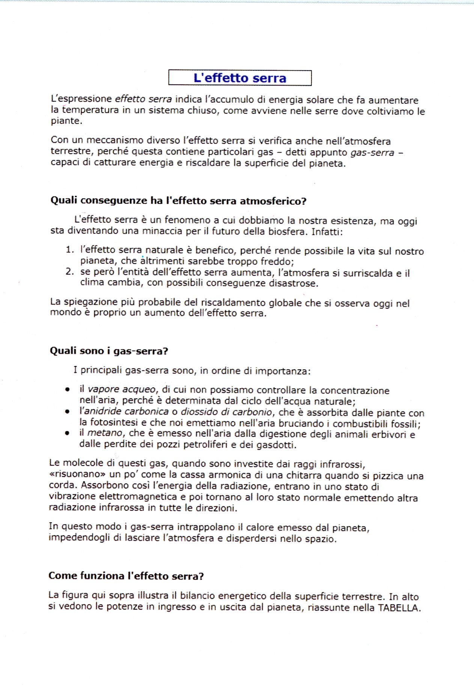

Versione per Google Documenti. Questa scheda guida gli studenti passo‑passo: crea un nuovo documento, incolla il testo non formattato, applica le formattazioni richieste e usa gli strumenti di base (annulla, trova/sostituisci, ortografia, apici/pedici). Adatta per DSA: caratteri grandi, passaggi chiari, tasti rapidi.
Figura 8.5

Immagine di riferimento da riprodurre (effettoserra.jpg).
Materiali
Scarica dal corso Moodle il file effetto_serra.txt (testo non formattato).
Accedi a Google Drive con l’account scolastico.
Accessibilità: se fatichi a leggere i testi piccoli, in Google Documenti puoi aumentare lo zoom (in alto a sinistra) e usare font ad alta leggibilità come Arial o Atkinson Hyperlegible (se disponibile).
Parte A — Creare il documento e inserire il testo
In Google Drive apri la cartella esercitazioni, clicca Nuovo → Documenti Google → Documento vuoto.
Rinomina il file: in alto a sinistra clic su Documento senza titolo e scrivi Effetto serra (testo), poi premi Invio.
Apri il file effetto_serra.txt dal tuo computer (Blocco note, TextEdit o editor di testo).
Nel file di testo premi Ctrl+A (Mac: ⌘+A) per selezionare tutto, poi Ctrl+C per copiare.
Torna su Google Documenti e premi Ctrl+V per incollare il testo nel documento vuoto.
In cima al testo aggiungi una nuova riga con la parola L’effetto serra e vai a capo (Invio). Questa riga sarà il titolo.
Parte B — Formattare titolo e testo
Seleziona tutto il testo: Ctrl+A. Imposta il font su Verdana (in alternativa Arial) e il corpo su 12.
Seleziona solo la riga del titolo L’effetto serra: rendila grassetto (Ctrl+B), centrata, colore blu, corpo 14.
Rendi in corsivo le parole indicate (ad es. effetto serra nel primo paragrafo): seleziona la parola e premi Ctrl+I. Ripeti per gli altri termini chiave (gas‑serra, vapore acqueo, ecc.).
Seleziona i titoli di sezione presenti nel testo (ad es. Quali conseguenze ha l’effetto serra atmosferico?, Quali sono i gas-serra?, Come funziona l’effetto serra?) e imposta grassetto senza cambiare dimensione.
Trucco veloce: per applicare la stessa formattazione a più parole, selezionane una già formattata e usa Modifica → Copia formato (icona pennello). Poi fai doppio clic sull’icona per “bloccarla” e applicarla a più parole; clicca di nuovo per disattivarla.
Parte C — Interlinea, spazio tra paragrafi ed elenchi
Seleziona l’intero documento (Ctrl+A), poi Formato → Interlinea e spaziatura tra paragrafi → Aggiungi spazio prima del paragrafo. I paragrafi saranno più separati e leggibili.
Riduci l’interlinea a Singola: Formato → Interlinea e spaziatura tra paragrafi → Interlinea → Singola.
Trasforma il quarto e il quinto paragrafo in un elenco numerato (oppure puntato): seleziona i due paragrafi e clicca l’icona Elenco numerato sulla toolbar. Cambia stile numerazione se necessario.
Trasforma gli ultimi paragrafi (sotto) in un elenco puntato se richiesto: seleziona e clicca l’icona Elenco puntato.
Parte D — Riquadrare il titolo e usare il righello
Posiziona il cursore sul titolo. Vai su Formato → Stili paragrafo → Bordi e ombreggiatura. Imposta Bordi su tutti i lati, Spessore ~ 1 pt, Distanza dal testo4 pt, quindi Applica.
Se il riquadro è troppo largo, usa il righello: trascina i triangolini sinistro e destro fino a restringere il paragrafo del titolo (es. margini a ~5 cm e ~11 cm) finché il riquadro appare centrato.
Imposta il rientro prima riga dei paragrafi di testo: con il cursore sul paragrafo trascina verso destra il piccolo triangolo superiore del righello a 1 cm. Ripeti nei primi paragrafi dopo ogni titoletto.
Parte E — Annullare e ripristinare
Prova a eliminare il primo paragrafo, poi Annulla con Ctrl+Z.
Ripristina l’azione con Ctrl+Y (Modifica → Ripeti), quindi annulla di nuovo con Ctrl+Z.
Cancella la lettera g da «energia» per ottenere «eneria». Google Documenti la evidenzierà.
Fai clic destro sulla parola e scegli il suggerimento corretto energia per correggere.
Per parole tecniche corrette ma sconosciute al dizionario, usa Aggiungi al dizionario personale oppure Ignora.
Parte G — Trovare e sostituire
Apri Modifica → Trova e sostituisci. Nella casella Trova scrivi gas- (o gas‑ con trattino).
In Sostituisci con scrivi gas (con uno spazio). Clicca Sostituisci tutto per cambiare tutte le occorrenze.
In alternativa, usa Sostituisci singole volte per controllare caso per caso. Usa Avanti per saltare le occorrenze che non vuoi sostituire.
Parte H — Apici e pedici
Trova la stringa W/m2 e seleziona solo il numero 2. Vai su Formato → Testo → Apice (scorciatoia: Ctrl+.).
Trova la stringa CO2 e seleziona il numero 2. Vai su Formato → Testo → Pedice (scorciatoia: Ctrl+,).
Ripeti per tutte le occorrenze di W/m2 e CO2 presenti nel documento.
Consegna su Moodle
Rinomina il file come Cognome_Nome_1A_EffettoSerra.docx (o in base alla tua classe).
Esporta/Scarica in PDF: File → Scarica → PDF.
Carica il PDF nell’attività Moodle indicata dal docente.
Docente: Prof. Marco Cocciniglia — Laboratorio di Tecnologie Informatiche. Questa pagina è pensata per essere letta anche da studenti DSA: istruzioni sequenziali, font leggibili, contrasti elevati e scorciatoie da tastiera evidenziate.